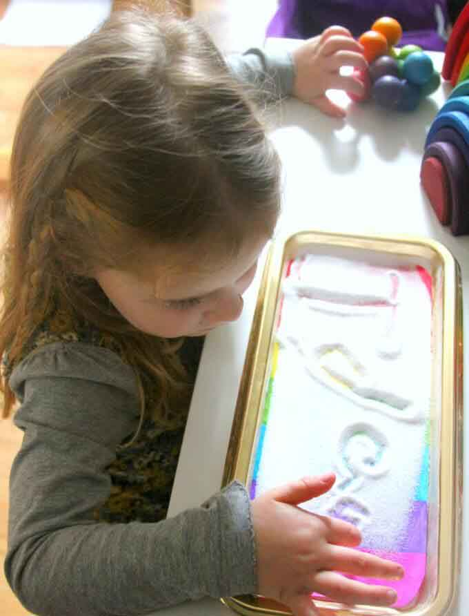
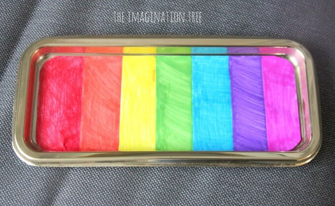

Think of your average preschooler. How long has this child been proficient with language? Depending on the age, the child may not really be too proficient yet! Others seem to have been talking non-stop since 2 1/2, but that means they’ve been talking now for all of…..about a year! Now think of how long these children have been seeing, smelling, hearing, feeling, and tasting. Their whole lives! Children are wired to receive and utilize sensory input from day one. This is why children will dive in hands first, exploring a new substance. The senses are their most familiar, most basic way to explore, process, and come to understand new information. This is why we must allow young children to learn through experience, not just lecture. These children need to use their senses and be engaged in meaningful experiences. As we talk with them about what they are observing and sensing, we give them new language tools to connect with these more familiar sensory tools, building language as well as supporting cognitive concepts specific to the experience.
Now, the flip side to this equation is important to remember as well. Just as children learn through their senses, they also are developing the ability to use those senses and are building the neurological pathways associated with each one. With added sensory experiences, combined with the scaffolding of adults and peers, children become more perceptive. Their sensory intake and processing becomes more acute. As they are better able to use their senses, they are then better able to learn through their senses.
Sensory play is really part of the scientific process. Whether out loud or within the internal dialogue of the mind, children have developed a question, leading them to investigate – by grabbing, smelling, listening, rubbing, staring, licking, what have you! They are using their senses to collect data and from that, attempt to answer their own questions. Whether or not young children are always able to verbally communicate this process, it is still a valid exercise in scientific inquiry.
The sensory table is the usually the first place people think of for sensory play. That’s logical, as the term “sensory” is shared by both. The sensory table certainly stands as an open invitation for hands-on exploration, but it is not the only place where the senses come into play. Throughout the preschool room and throughout the preschooler’s day, there are appeals being made to the five senses. The sound of toppling towers in the block area, the feel of finger-paint sliding under their fingertips, the glow of the Light Brite at the small manip table, the smell of cinnamon playdough. As parents, our children’s first teachers, the more we can attend to the sensory involvement of our planned activities, the more our children will be engaged and the more they will learn. For example, when discussing the need for warm clothes in the winter time, we can simply tell children about it, or we can have them hold ice cubes, one in a bare hand, and one in a gloved hand, let them really feel the difference and then meaningfully attach a verbal discussion to the sensory experience.
Back at the sensory table, we can find many more benefits to sensory play. That bin of sand, or foam, or colorful rice is more than just another way to keep kids busy, it is a bustling factory of developmental growth. In addition to honing sensory and science skills, sensory play builds language, social, and dramatic play skills as the children negotiate with one another to share tools, create stories, and build dialogues. Both small and large motor skills get a boost as well, as the children manipulate the medium and tools of the day. Creative, divergent thinking is displayed as the children are essentially invited to explore and come up with new ways to use the materials. Cognitive skills are fostered as well as the children learn about specific concepts pertinent to the bin’s contents. Things like gravity, parts of plants, states of matter, and color mixing are easily explored and understood through sensory play. As you teach appropriate boundaries with sensory play, children develop more self-control and body awareness. As one of the truest open-ended activities, sensory play provides an opportunity for every child to succeed. No matter if you are gifted or delayed, learning a new language or mastering your first, you can’t really fail with a bin full of beans or a ball of playdough. Children who struggle to succeed or who are apprehensive about failure often find solace in sensory play. The simple act of pouring water or running fingers through rice is often cathartic and calming to many children who may be struggling emotionally. It can soothe the nervous child, distract the homesick child, and serve as an outlet for the angry child. For children with special needs and sensory integration disorders, sensory play may be particularly therapeutic. Please note that we must also avoid over-stimulation in many sensitive children. Special attention must also be paid to children with sensory integration disorder and properly recognizing their thresholds. We often think of the sensory table as being a tactile activity, which it largely is, but the other senses come into play as well! The tapping sounds of popcorn kernels hitting the bin, the pungent smell of baking soda and vinegar at work, the sight of separating colors as tinted water, oil, and syrup are mixed together are all sensory experiences that can be tapped at the sensory table. Taste sometimes finds less desirable ways to sneak in at the table as well, though taste-tests can also be properly planned as fantastic sensory experiences!
Find ways to optimize sensory play for your children. Whether that’s providing a bin of sand to explore, giving your child a dish wand and plastic dishes to “wash” at the sink, or finding ways to integrate the senses into your other activities, provide space and time for sensory play! It’s a natural and satisfying way to explore and learn!